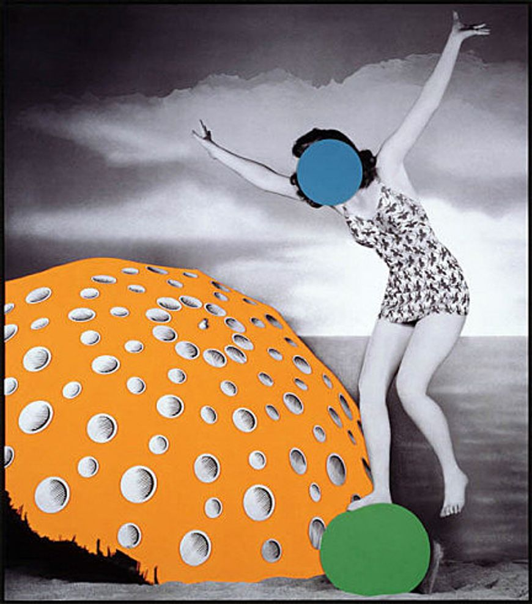
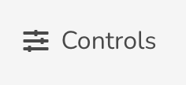
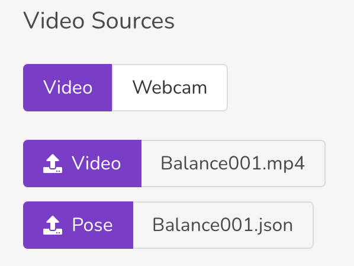

This section suggests a potential workshop that an instructor could lead teaching danceON. The students should have some basic knowledge about danceON and ready to start creating their own peice.
As it could be intimidating to start with a blank canvas, we will have a look at some art pieces in different medium from other artist that can be insipring for creations in danceON. Using danceON as a tool to recreate the observed piece will be the main practice, and hopefully the method introduced here will be a good review and can help you develop their own master piece.
There should not be one correct way to observe and describe an image. Even using the same method, two person can still recreate a image through compeletely different process of observation. The process documented here should only be a guidance that helps you practice observation in art. The goal is to have your own way observing art pieces.
Visual Analysis Practice (10 min)
One of the ways to practice observing a image is to describe the image as if you are to recreate it. When observing static 2D art pieces such as images or pictures, you can use as simple as a pencil and a scrap paper as your imagined medium of recreation, but you can also use danceON.
Before you let your eyes wander in the field, here is a list of questions that you can keep in your mind when looking at this image (this could be made into a worksheet):
General composition of the image
Where is everything?
How are things positioned?
Depth of the image
How many layers of things are there?
What are their order and relations?
Details of each thing
What colors/patterns they have
What specific properties each thing has
Detalis of the character(s)
What are the gestures/motions?
How are the motions suggested through visual languages?

Figure 1: Umbrella (Orange): With Figure and Ball (Blue, Green), John Baldessari, 2004
Here is a sampled visual analysis I made when observing this image with the idea that I will recreate it in danceON.
Things that I pay attention
General compositionof the image
There is a feminine-looking person in a bathing suit standing on a ball next to an opened umbrella in a vertically composed image.
Where is everything?
The person is on the right and the umbrella is on the left of the image.
How are things positioned
The person is standing facing the camera, but the person’s face is covered with a circular shape.
Details of everything
How many layers are there? What are their relationships?
The ball and the figure is slightly in front of the umbrella, and they seem to be on a beach based on the texture of the contact surface. The sea level is in the far background and runs through the image slightly below the horizontal centre line. More to the background, there are a few pieces of cloud in the sky.
Depth of the image
What colors/patters are there?
Everything is grayscaled other than the umbrella, the ball, and the circular shape covering the person’s face. The umberlla is solid light orange and has multiple shaded ciruclar dots as its pattern. The ball is solid green and simplified.
What are other specific properties?
It doesn’t look like a photographed ball but more like the geometric circular shape. The circular shape covering the person’s face is blue and resambles the ball in its simplifed texture and geometric shape. The person has shoulder-length curled black hair and is wearing a patterend swimsuit.
Details of characters’ motion
What are the gestures/motions suggested?
Standing on the ball with their right foot, the person’s left foot knees are slightly bent. The person has their hand swinging outwards and wide open. Looks like they are balancing themselves.
How are the gestures/motions suggested through visual languages?
The out pointing hands waving in the air and bent knees portrays a balancing pose. The composition of person standing on the ball with one leg also makes up the story of the person balancing on the ball.
Recreation (30 min)
Phew, there are a lot of texts and information, but we did it! This process should help us recreate it in dance on logically.
We will always use the general composition as a reference of our creation. The rest will be our guide creating the scene.
To start in danceON, first thing first is to match the vertical composition of Baldessari’s piece. Because the default webcam format in danceON is horizontal, there are a few things we can do to get around with it. It is a good brainstorming/discussion questions to ask the students if they have any proposals on how they would match the vertical compositions with danceON.
The most straightforward way is to record a vertical video and upload it via the upload option in controls on the top right corner. Click the uplaod button in the middle line of the Video Sources Panel after you have a video of someone doing a similar motion as the character.
 
Reflection (10 min)
Code
# How dancer describe the movement? -- On line dance education?# -- New York City DOE Professional Models# danceON -- Case-based Reasoning: Code helping with analysis# -- Positions of dancers# Stand from dance # Scafolding the creative process# -- translate the observation to creativity# -- key parts of observation to translation# -- state in the begaining, looking for the key points# -- other key points, guide the discussion, **more like an instructor guidebook**# -- put timing next to them# -- challenge: artistic challenge, brighen the color/make it stylistic# -- guides to structure the lesson# -- randomness# -- subgoals:# -- subsectioning titles: in conversation with technical concept# -- focus on the instructor's readability# -- pick a sound, ask a student to record, upload it to dance on, make modification# -- user study# -- participotory design# -- design feedback, try to get them think across bigger changes# -- how to structure/organize the things# -- miro board? thinking about their practive ahead# -- making design choices based on our observation
Code
import heapqdef topKFrequent(nums, k): s=set(nums) count=[]for i in s: count.append(nums.count(i)) dictionary =dict(zip(s, count)) arr=[-1,-1,-1,2,2,3]topKFrequent(arr,2)